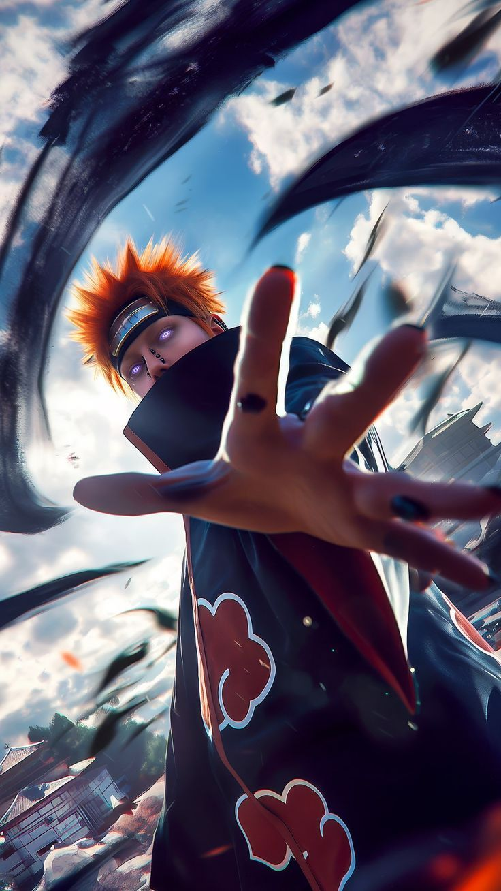

Pain is one of the most powerful and philosophical antagonists in Naruto. Pain is actually the alias used by Nagato, a shinobi from the Hidden Rain Village who controls six separate bodies known as the Six Paths of Pain using the Rinnegan. Each body has a unique ability, such as gravity manipulation, soul extraction, mechanical weaponry, and summoning, making him incredibly versatile and nearly unstoppable in battle.
Nagato originally dreamed of peace, but after experiencing immense war and loss, his personality changed, leading him to believe that true peace could only be achieved through shared suffering. As a leader of the Akatsuki, Pain carried out missions to capture tailed beasts and enforce his vision of peace through fear and destruction. One of his most devastating acts was the destruction of the Hidden Leaf Village, where he demonstrated overwhelming power against shinobi like Naruto Uzumaki.
Pain from Naruto has a cold, calm, and highly philosophical personality that reflects his belief that true peace can only be achieved through suffering. As the public persona of Nagato, Pain presents himself as an emotionless, god-like figure who speaks with authority and rarely shows anger or fear. He is deeply intelligent and composed, always in control of situations, and views himself as someone chosen to bring balance to a chaotic world. Pain believes that by making people experience pain, they will understand each other and stop fighting, which drives his ruthless actions, including destruction and war. Despite his harsh ideology, his personality is not purely evil—he is shaped by trauma, loss, and disappointment in humanity. This gives him a tragic depth, as beneath his stoic exterior lies a person who once desired peace but lost faith in the world.
Pain from Naruto possesses some of the most powerful abilities in the series, all derived from the Rinnegan wielded by Nagato. Instead of fighting with a single body, he controls the Six Paths of Pain, each with a unique power, making him extremely versatile and difficult to defeat.
The Deva Path is the most powerful, allowing him to manipulate gravity with techniques like Shinra Tensei (repulsion), Banshō Ten’in (attraction), and Chibaku Tensei (creating massive gravitational spheres). The Asura Path grants him mechanized weaponry, transforming his body into a living arsenal. The Human Path can read minds and extract souls, instantly killing opponents. The Animal Path summons giant creatures that can overwhelm enemies. The Preta Path absorbs chakra and nullifies ninjutsu, making most attacks useless. Finally, the Naraka Path can summon the King of Hell to heal other Paths or interrogate enemies.

Pain from Naruto carried out missions driven by his vision of achieving peace through suffering. As the leader of the Akatsuki (under the true identity of Nagato), his primary mission was to capture all the tailed beasts and use their power to create a weapon capable of causing massive destruction. His belief was that by making the world experience overwhelming pain, nations would fear war and eventually seek peace.
One of his most significant missions was the invasion and destruction of the Hidden Leaf Village, where he demonstrated his god-like abilities while searching for Naruto Uzumaki, the Nine-Tails’ jinchūriki. This attack was meant to enforce his ideology and capture Naruto as part of the Akatsuki’s larger goal. Pain also carried out various operations to maintain control over the Hidden Rain Village, ruling it with absolute authority. Ultimately, his final “mission” changes after his confrontation with Naruto. Influenced by Naruto’s ideals of peace, Pain chooses to abandon his destructive path and sacrifices himself to revive those he killed, showing that his true goal was always peace, even if his methods were extreme.
Nagato, later known as Pain in Naruto, joined the Akatsuki through a tragic and transformative journey. Originally, the Akatsuki was founded by Nagato and his close friend Yahiko with the noble goal of bringing peace to the war-torn Hidden Rain Village without violence. During this time, Nagato was compassionate and deeply believed in hope and cooperation.
However, everything changed after a betrayal involving Hanzo and the intervention of Danzo Shimura, which led to Yahiko’s death. This traumatic event broke Nagato emotionally and completely altered his beliefs. Taking on the identity of Pain and using Yahiko’s body as the Deva Path, he reformed the Akatsuki into a far more ruthless organization focused on enforcing peace through fear and destruction.
From that point on, Pain didn’t just join the Akatsuki—he became its leader, guiding its members toward capturing tailed beasts and executing his vision of peace, marking a drastic shift from his original ideals to a darker, more extreme path.